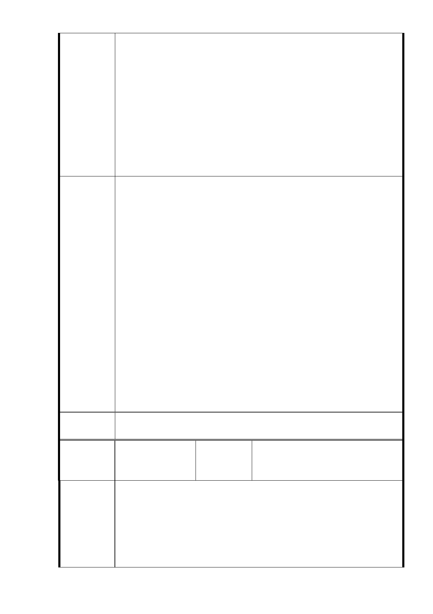

部頒訂標準 14.3 ㎡。
5.公營出租住宅之入住對象、租金、租期、經營管理方式均有別
於以往平價住宅，較利於就居住品質及周遭環境進行管理。
6.本計畫區內計有本市列管之受保護樹木約14株、非受保護樹木
約655株部分，後續將依樹保相關規定辦理，並納入建築物規
劃配置，以原地保留為原則，以降低對樹木生長之影響。
7.福德派出所尚未達使用年限，故暫不拆除，將先由警察局另行
辦理建物補強事宜。
8. 本案於95年辦理主要計畫變更時，業劃設商業區，預計由財
政局以設定地上權方式招標作業開發，後續相關收入將納入公務
預算作使用，故對本府財源及施政均有助益，亦可回饋社會大眾。
1. 民眾的陳情意見已充分表述，但因許多訴求牽涉建築配置、
環評、樹木保存、交通管制及都市設計，現階段非屬都委會
的職掌所能處理，今天的溝通可讓民眾的意見提早讓市政府
相關主管單位及早研提因應並提出行政措施，俟該開發行為
提送時，亦尚有各專屬都市設計、環境評估、樹保委員會、
及建照申請審議，依規定程序辦理，合先敘明。
2. 本案市府所提社福用地各種設施已兼顧周遭社區民眾需求及
符合當前推動公有出租住宅之優先政策，並有效利用公有土
專案小組
審查結論
地之再發展，以此先行計畫帶動四周之更新強化本地區生活
品質，並考量完整公有地難求之下，都發局所提本案社福用
地恢復原先容積率為 400％，建請同意。
3. 為避免周遭社區住宅不因本案之建設而影響依建築技術規則
所訂之最小日照權，臨林口街 80 巷、福德街 84 巷及大道路
建築時，均應於本案範圍內單向一致退縮滿 30 公尺（含面臨
道路寬度），並請於都市設計審議時注意樓群座落之位置、社
福設施與住宅之區隔。
4. 請依委員意見記錄酌予調整說明書，併同公民或團體陳情意
見綜理表提出市府回應，於一星期內提送書面資料送大會審
議。
委 員 會 同意專案小組審查結論，本案依市府公展計畫書、本次提會資料
決 議 及本次補充會議資料修正內容對照表修正後通過。
編號
2
台北市信義區大道里林口街居民
陳情人 自救會會長羅○廉（陳議員永德
轉交）
一、反對台北市政府將社福用地容積率從 210％調回 400％。
理由：
1.原先廣慈 BOT 開發案時，林口街 80 巷居民因社區住宅（高
陳情理由
44.85 公尺）及老人長照住宅（高 30.55 公尺）規劃蓋在我
們住宅區的正對面，嚴重影響住宅區日照，附近居民組織自
救會抗議。
2.我們住在廣慈這裡已 37 年了，廣慈周邊從民國 95 年至今，
- 19 -